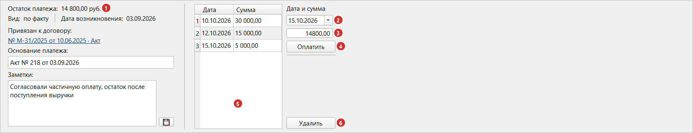

Раздел 4. Оплата платежа |
Когда платеж выполнен, внесите оплату — дату и сумму: остаток уменьшится. Здесь описаны частичные оплаты, оплата больше остатка и удаление оплаты.
Где вносится оплата |
Оплата вносится в панели сведений (раздел 2) выбранного платежа.

Рис. 13. Панель сведений платежа, по которому внесено три оплаты.
| № | Часть панели | Что это |
|---|---|---|
| 1 | «Остаток платежа» | Сколько ещё осталось заплатить |
| 2 | Поле даты (над ним подпись «Дата и сумма») | Дата оплаты; по умолчанию сегодня |
| 3 | Поле суммы | Сколько заплатили; по умолчанию остаток платежа (0,00, если платеж переплачен) |
| 4 | «Оплатить» | Записывает оплату |
| 5 | История оплат | Оплаты платежа по дате, сверху самая ранняя |
| 6 | «Удалить» | Удаляет оплату, выбранную в истории |
|
💡 Совет. Для оплаты целиком дата и сумма уже подставлены: проверьте дату и нажмите «Оплатить» (или Enter в поле даты или суммы). |
Частичная оплата |
Каждую часть вносите отдельной оплатой.
Пример. Платеж «Калибровка лабораторных весов» на 7 800,00 со сроком оплаты 05.10.2026.
| Что вы сделали | Остаток платежа |
|---|---|
| Ничего не оплачивали | 7 800,00 |
| Внесли оплату 3 000,00 | 4 800,00 |
| Внесли оплату 4 800,00 | 0,00 — платеж оплачен полностью |
Оплата больше остатка |
Оплату больше остатка внести можно, но программа переспросит:
|
«Сумма оплаты (20 000,00) превышает остаток задолженности (14 800,00). Уверены, что хотите продолжить?» |
После «Да» остаток станет отрицательным («-5 200,00») — это переплата. Платеж с отрицательным остатком считается оплаченным, а остаток входит в итоги.
|
⚠️ Внимание. Переплата не исчезает сама: удалите лишнюю оплату и внесите правильную (см. «Удаление оплаты») либо внесите возврат (см. «Возврат части оплаты»). |
Возврат части оплаты |
Если вам вернули часть уплаченных денег, внесите оплату со знаком «минус», например «-300,00». Остаток вырастет на эту сумму, в истории оплата будет показана со знаком «минус».
Общая сумма платежа при этом не меняется. Если она тоже должна уменьшиться, исправьте её в окне редактирования платежа (раздел 3).
Возврат нельзя внести на сумму больше, чем оплачено по платежу: программа покажет сообщение «Сумма возврата (…) превышает сумму оплат по платежу (…)». Если платеж давно оплачен и скрыт, сначала увеличьте срок показа оплаченных в настройках.
|
⚠️ Внимание. После возврата остаток становится больше нуля, поэтому платеж снова считается неоплаченным и, если срок оплаты прошёл, показывается как просроченный. |
Оплата с будущей датой |
Если выбранная дата позже сегодняшней, программа спросит:
|
«Выбранная дата (14.10.2026) больше текущей даты. Уверены, что хотите продолжить?» |
Остаток уменьшится сразу, а не в день оплаты. Если вопрос неожиданный, проверьте дату: возможно, выбран не тот месяц.
История оплат |
Внесённую оплату нельзя изменить: ошиблись в дате или сумме — удалите её и внесите заново.
Удаление оплаты |
Выберите оплату в истории и нажмите «Удалить» (или Del); программа спросит: «Вы уверены, что хотите удалить запись об оплате?». Остаток увеличится на сумму оплаты, сам платеж не удаляется. Оплату можно удалить и из окна сверки выписки (кнопка «Отменить оплату», раздел 8).
|
⚠️ Внимание. Отменить удаление нельзя; удалили не ту — внесите заново. |
Если платеж, оплаченный полностью, нужно «вернуть в неоплаченные». Включите пункт «Оплаченные» («СРОК ОПЛАТЫ»), выберите платеж и удалите оплату.
Что будет с платежом в таблице |
Платеж считается оплаченным, когда остаток нулевой или отрицательный, кроме оплаты сегодняшней датой.
| Что вы внесли | Остаток | Что в таблице |
|---|---|---|
| Часть суммы | Больше нуля | Платеж остаётся среди неоплаченных, строка подсвечивается по сроку оплаты |
| Всю сумму, датой сегодня | Ноль | До конца дня платеж остаётся среди неоплаченных и сохраняет цвет по сроку оплаты. С завтрашнего дня он переходит в «Оплаченные» |
| Всю сумму, датой в прошлом | Ноль | Платеж сразу исчезает из «Все неоплаченные» и появляется в «Оплаченные» |
| Сумму больше остатка | Меньше нуля | Как при полной оплате, но остаток показан со знаком «минус» |
| Всю сумму, датой в будущем | Ноль | Платеж считается оплаченным сразу и виден в «Оплаченные» |
В столбец «Оплата сегодня» (раздел 2) и во флажок «ОПЛАТА СЕГОДНЯ» (раздел 5) попадают только оплаты с датой сегодня; оплата, внесённая сегодня вчерашней датой, не учитывается.
|
💡 Совет. Если платеж пропал из таблицы после оплаты, ошибки нет: он оплачен полностью датой в прошлом, ищите его в «Оплаченные». |
Если что-то пошло не так |
| Что вы видите | Что случилось | Что делать |
|---|---|---|
| Нажали «Оплатить», ничего не произошло, сообщения нет | В поле суммы 0,00 (остаток равен нулю или платеж переплачен) | Введите сумму оплаты |
| Сообщение «Сумма оплаты (…) превышает остаток задолженности (…). Уверены, что хотите продолжить?» | Вы вносите больше остатка | Если так и задумано — «Да», иначе поправьте сумму |
| Сообщение «Выбранная дата (…) больше текущей даты. Уверены, что хотите продолжить?» | Дата оплаты позже сегодняшней | Если так и задумано — «Да», иначе поправьте дату |
| Кнопка «Оплатить» серая | Не выбран платеж, выбрана строка раздела или итога либо выбран возврат | Выберите в таблице обычный платеж |
| Кнопка «Удалить» серая | В истории не выбрана оплата, либо выбран возврат | Щёлкните по строке оплаты в истории |
| Оплата внесена, но платеж пропал из таблицы | Платеж оплачен полностью датой в прошлом | Найдите его в «Оплаченные» (раздел 5) |
| Остаток платежа со знаком «минус» | Оплат внесено больше суммы платежа | Удалите лишнюю оплату, внесите возврат или проверьте сумму платежа (раздел 3) |
| Сообщение «Сумма возврата (…) превышает сумму оплат по платежу (…)» | Оплата со знаком «минус» больше, чем оплачено по платежу | Проверьте сумму возврата |
| Оплата не появилась в истории, хотя сообщения не было | Оплату не удалось записать | Повторите. Если не помогло, перезапустите программу |